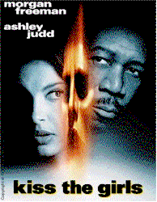
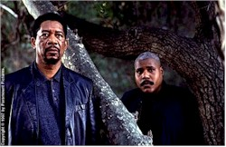
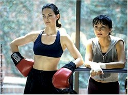
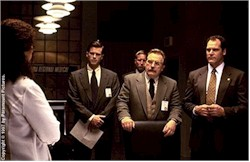

Contents | Features | Reviews | News | Archives | Store |
 |
|
| Movie Credits | Buy It! |
Kiss the Girls
Review by Eddie Cockrell
Posted 3 October 1997
|  | Directed by Gary Fleder Starring Morgan Freeman, Ashley Judd, Screenplay by David Klass, |
That contemporary American society is far enough along some bizarre cultural path to create a movie which can be described as a dour pastiche of serial killer movie clichés is a thought to give anyone pause, but there you go: sort of a Phantom of the Silence of the Usual Manhunter Copycat Lambs, Kiss the Girls is so severely derivative of these and a handful of other top-notch movie and not-so-top-notch television thrillers that even those who don't normally groove on figuring out whodunnit will have no trouble identifying the sadistic but rather half-heartedly fey "Casanova" killer ("kiss me," he breathes about twice – thus the title), who collects young, strong-willed female victims in some sort of underground antebellum torture chamber and kills the ones who become too feisty (hint: these kinds of movies are seldom built around characters played by actors with low billing). Positing Seven as a seven, Kiss the Girls is no more than a three – and only that much because both Morgan Freeman and Ashley Judd give their impressive alls to roles that lack both dimension and motivation.
Not that you'd know it from the sketchy exposition – unless, of course, you'd read James Patterson's source novel, probably while imprisoned on a wide-body somewhere over the Atlantic – but the film revolves around Washington, D.C.-based Dr. Alex Cross (Freeman), a widower and supposedly brilliant forensic pathologist who takes it personally and hard when his niece Naomi (Gina Ravera) turns up missing from her college dormitory in North Carolina.
Cross apparently has powers of intuition in matters concerning murders and stuff (he can look very pensive when he wants to), but as he arrives at the New South's so-called Research Triangle to assist in an investigation that now encompasses seven other missing women and two bodies, he discovers that the laconic local constabulary, lead by Chief Hatfield (Brian Cox) and detectives Nick Ruskin (Cary Elwes) and Davey Sikes (Alex McArthur), seem long in sinister southern fake charm but obviously want to delay him from profiling until at least the millennium.
Complicating matters for both protagonist and audience are peripheral characters Agent Kyle Craig (Jay O. Sanders) from the F.B.I, Naomi's hostile boyfriend Seth Samuel (Richard T. Jones) and Priapean professor Wick Sachs (William Converse-Roberts) – all of whom may know more than they're letting on, but probably not. Also along, presumably for veracity, is the immediately recognizable Roma Maffia (Disclosure, Eraser, "Profiler," "Chicago Hope") in her lawyer/detective/cop/doctor authority figure mode (she's a commanding presence, but desperately needs a change of pace).
Cross' status changes abruptly when supposedly brilliant medical intern – doesn't this stuff ever happen to normal, non-brilliant people? – Kate McTiernan (Ashley Judd) is abducted by the killer. Using her kickboxing skills (!!!) to escape the white-masked killer's well-hidden underground lair (no, it isn't under the Durham opera house), she verifies in a press conference that the other women (including Cross' niece) are alive and being held captive.
Since in movies like this Every Moment Counts, Cross and McTiernan Must Join Forces to track the killer (or killers) on a journey that takes them to Los Angeles and the suspicious activities of Dr. Will Rudolph (Tony Goldwyn). They are aided there by Sampson (Bill Nunn) and Henry Castillo (Jeremy Piven), who might be cops or in Sampson's case might be related to Cross but by the fifth reel who knows? Then it's back to North Carolina and the inevitable atmospheric showdown with the killer, which in this day and age requires not only at least one fakeout ending but a final showdown with a spunky but wounded woman, a senseless justification speech from the felon and some fancy marksmanship that metes out brutal but deserving justice.
There's more backstory in the above than you'll find in the movie. Cross' motivations are obscure in the extreme, as he's shown at the beginning of the film boxing with presumably inner-city youth (following a shot of D.C.'s toney Georgetown waterfront!) and spouting exposition in a quickly-sketched family scene – neither one of which is ever referred to again. Similarly, Kate McTiernan could just as easily be the head of the hospital as an intern, for all the information provided. And by the time the two finally band together, all logic flies out the window as a pseudo-cop and a civilian apparently are able to commandeer an entire investigation while apparently living together with no embarrassment or discomfort in a series of huge hotel rooms. If this weren't enough, the filmmakers add insult to injury by breaking the cardinal rule of honest exposition: the killer has no backstory whatsoever, and a key character is introduced after about the third reel.
Hooey on such an epic scale can be (and often is) embraced by an adoring public, but in this case it'll be no sale for sure: exacerbated by a script that is both shallow and distracted, and cluttered with characters who serve no discernable purpose, the film spins its wheels hopelessly in an attempt to create some sort of tension. That it feels so comfortable lifting plot elements wholesale from such revered genre touchstones as Manhunter (the secluded house invasion), The Phantom of the Opera (sadist as masked tortured soul), The Silence of the Lambs (seductively creepy killer with demented taste vs. dogged good guy – er, gal – with intellect and gumption), The Usual Suspects (the key hint is in front of everybody on a wall full of case-related paperwork) and Copycat (uh, it copies stuff from other killers) is at first faintly reassuring, then annoying and finally intolerable. Better to rent all of the above (along with the incomparable Seven) and have a serial killer film festival, if that's what sharpens your cleaver.
All that said no movie is completely without appeal, even Kiss the Girls: as perfunctory and ridiculous as things get, Freeman and Judd sell it well with performances of focused intensity. Movies like this depend on a ruminative authority figure whose life can be read in lines of worry upon the face, and in this Freeman is virtually without peer in contemporary American cinema. As with his William Somerset in Seven, Freeman's Alex Cross is awash in an uneasy mixture of melancholy and regret, seasoned with an intellect and dogged sense of justice that won't allow sleep until resolution.
At first given less than nothing to work with, Judd doggedly carves a soul out of her one-dimensional character, whose abduction, flight through the woods and subsequent remorse over the perceived abandonment of the other prisoners give this emotionless movie something eloquently human to identify with. As to the rest of the cast, they're not even given enough to struggle valiantly with – and the movie even wastes the sly opportunity of casting the original Hannibal Lecter, esteemed British character actor Brian Cox (see Manhunter), as a lawman by giving him a fine genre setup – pipe-sucking southern gentleman – followed by nothing to do.
Director Gary Fleder, whose freshman effort Things to Do in Denver When You're Dead was also a case of more visual promise than narrative result, retained much of his behind-the-scenes craftspeople for his sophomore slump: production designer Nelson Coates has mixed authentic North Carolina and California locations with truly frightening manufactured interiors to spectacular effect, while cinematographer Aaron Schneider has graduated from camera operator to create an authentically creepy and palpably dank widescreen palette.
But as with Things, Fleder exercises a great deal of style in pursuit of an utterly empty story. Having not read the source novel, a guess might still be hazarded that the culprit here is neophyte screenwriter David Klass, who has authored numerous novels ("Night of the Tyger," "Wrestling with Honor," "California Blue," "Danger Zone") but apparently has never had a script produced prior to this. Although the tired story placed him at a disadvantage from the opening bell, clearing away much of the character clutter in favor of some solid motivation would have gone a long way towards providing some sorely lacking luster.
Veteran co-producer Joe Wizan remembers that "this was not your typical suspense novel. Something suddenly happened in the plot to take it into another orbit, and it became a spellbinding thriller." Regrettably, that something appears to have been left out of the film, and the resulting product (with all the soullessness that word connotes) is not only in a much lower orbit, spellbinding-wise, but is proof positive that a good little airplane read doesn't automatically translate to the big movie screen.
Contents | Features | Reviews | News | Archives | Store
Copyright © 1999 by Nitrate Productions, Inc. All Rights Reserved.